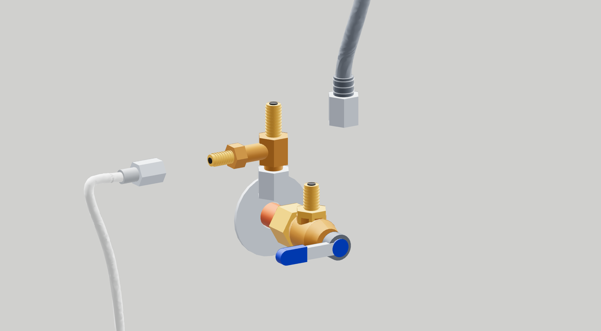
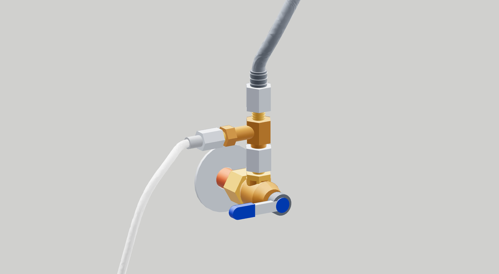

Add the water tee - braided hose
3 / 5
For a 3/8-inch braided faucet hose. Keep a towel below. The white tube continues through the supplied filter.


3 / 5
For a 3/8-inch braided faucet hose. Keep a towel below. The white tube continues through the supplied filter.

